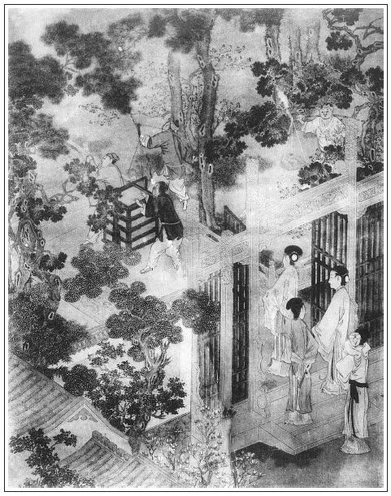

張回此回乃散雪娥之由，而嫁玉樓之機，所以出落春梅也。人言此回乃最冷的文字，不知乃是作者最熱的文字，如寫佳人才子到中狀元時也。何則？上文如許鬧熱，卻是西門鬧熱。夫西門，乃作者最不得意之人也。
故其愈鬧熱，卻愈不是作者意思。今看他於出嫁玉樓之先，將春光極力一描，不啻使之如錦如火，蓋云：前此你在鬧熱中，我卻寒冷之甚；今日我到好時，你卻又不堪了。然而此回卻是寫春，未便寫玉樓。夫玉樓乃作者自喻，而春梅則非自喻之人。蓋云：且令他自家人去，反轉炎涼他一番，使他一向驕人之念，市井短見之習，自家愧恥一番。我卻不與他一般見識，我還要自家愈加儆策，不可如他得時便驕縱。故下文方寫玉樓，而接筆即寫玉簪之橫，見得我雖乾乾終日，尚有小人萋菲於下，設稍不謹，則又亡秦之續，故又接寫「嚴州李衙內受辱」見憂心悄悄，惟恐如斯，時以患難自儆，羞辱自惕。此我之所以處得意者必如此也。設也稍自放逸，求棗強縣夫妻相守讀書，豈可得哉？此作者直是第一等人品，第一等身份，第一等學問寫出來，以示人處寶貴之方。然而作者寫西門熱鬧，則筆愈放；寫春梅得志，則筆蓄鋒芒而不露；至後文寫玉樓，則筆愈斂而文愈危，是大聖賢大豪傑作用。是故玉簪乃玉樓鐫名之物，而即以之為抑玉樓之人，見我到富貴雖呼己名而求下於人猶恐不盡然也。至於嚴州，敬濟固以色迷，而玉樓實以名累。李衙內以利局人，即所以害己；玉樓以計騙人，幾不保其身。吁！名利場中，酒色局內，觸處生危，十二分斂抑，猶恐不免，君子乾乾終日，蓋以此哉！是故我雲《金瓶》一書，體天道以立言者也。
於此回首夾寫大姐歸去一段文字，後文於雪娥文中篇尾，又夾寫大姐歸去一段文字。止用首尾帶寫，又是一樣章法，總是收煞之筆也。然此回大姐去兩番，而敬濟終不收，是何故？蓋又作者陽秋之筆，到底放不過月娘也，夫大姐即無寄放箱籠，亦有隨身箱籠，於十七回內，明明說搬入上房，乃今止遣大姐獨歸，兩番全不題起箱物，直至後文雪娥逃，來安走，惠秀死，敬濟要告方肯拿出，則月娘之貪刻陰毒無恥，已皆於不言中寫盡。然則不為大姐哭，當為瓶兒哭也。故必幻化其子，方使月娘貪癖、刻癖、陰毒無恥之癖乃去也。
詞曰：
佳人命薄，歎絕代紅粉，幾多黃土。豈是老天渾不管，好惡隨人自取？既賦嬌容，又全慧性，卻遣輕歸去。不平如此，問天天更不語。
可惜國色天香，隨時飛謝，埋沒今如許。借問繁華何處在？多少樓台歌舞，紫陌春遊，綠窗晚秀，姊妹嬌眉嫵。人生失意，從來無問今古。張夾此回單結金蓮並結瓶兒。
──右調《翠樓吟》

話說月娘次日備了一張桌，並冥紙尺頭之類，大姐身穿孝服，坐轎子，先叫薛嫂押祭禮，到陳宅來。只見陳敬濟正在門首站立，便問：「是那裡的？」薛嫂道了萬福說：「姐夫，你休推不知。你丈母家來與你爹燒紙，送大姐來了。」繡眉月娘禮短，即薛嫂說來亦覺口澀。敬濟便道：「我𩫻𩫵㒲的才是丈母！繡旁妙語。張夾然則，永福寺內，真岳母也。正月十六貼門神──來遲了半個月。人也入了土，才來上祭。」薛嫂道：「好姐夫，你丈母說，寡婦家沒腳蟹，不知親家靈柩來家，遲了一步，休怪。」正說著，只見大姐轎子落在門首。敬濟問：「是誰？」薛嫂道：「再有誰？你丈母心內不好，一者送大姐來家，二者敬與你爹燒紙。」敬濟罵道：「趁早把淫婦抬回去！好的死了萬萬千千，我要他做甚麼？」繡旁忽插入金蓮，妙不容言。薛嫂道：「常言道：嫁夫著主。怎的說這個話？」敬濟道：「我不要這淫婦了，還不與我走？」那抬轎的只顧站立不動，被敬濟向前踢了兩腳，罵道：「還不與我抬了去，我把你花子腳砸折了，把淫婦鬢毛都蒿淨了！」那抬轎子的見他踢起來，只得抬轎子往家中走不迭。比及薛嫂叫出他娘張氏來，轎子已抬去了。
薛嫂兒沒奈何，教張氏收下祭禮，走來回覆吳月娘。把吳月娘氣的一個發昏，說道：「恁個沒天理的短命囚根子！當初你家為了官事，搬來丈人家居住，養活了這幾年，今日反恩將仇報起來了。只恨死鬼當初攬的好貨在家裡，弄出事來，到今日教我做臭老鼠，教他這等放屁辣臊。」繡眉養活女婿幾年，便以為恩；收女婿許多東西，便不題。這燒香好佛人大都如此。張夾不怨自己。對著大姐說：「孩兒，你是眼見的，丈人、丈母那些兒虧了他來？你活是他家人，死是他家鬼，我家裡也難以留你。你明日還去，休要怕他，料他挾你不到井裡。他好膽子，恆是殺不了人，繡眉月娘數語，而拚送大姐與敬濟打罵矣。張夾透下。難道世間沒王法管他也怎的！」當晚不題。
到次日，一頂轎子，教玳安兒跟隨著，把大姐又送到陳敬濟家來。不想陳敬濟不在家，往墳上替他父親添土疊山子去了。張氏知禮，把大姐留下，對著玳安說：「大官到家多多上覆親家，多謝祭禮，休要和他一般見識。他昨日已有酒了，故此這般。等我慢慢說他。」一面管待玳安兒，安撫來家。
至晚，陳敬濟墳上回來，看見了大姐，就行踢打，罵道：「淫婦，你又來做甚麼？還說我在你家雌飯吃，你家收著俺許多箱籠，因起這大產業，張夾將西門傢俬，隱隱寫出不明之處。不道的白養活了女婿！好的死了萬千，我要你這淫婦做甚？」大姐亦罵：「沒廉恥的囚根子！張夾對其姑亦不應如此罵。沒天理的囚根子！淫婦出去吃人殺了，沒的禁拿我煞氣。」張夾月娘家教如此無禮。被敬濟扯過頭髮，盡力打了幾拳頭。他娘走來解勸，把他娘推了一交。他娘叫罵哭喊，說：「好囚根子，紅了眼，把我也不認的了！」到晚上，一頂轎子，把大姐又送將來，分付道：「不討將寄放妝奩箱籠來家，我把你這淫婦活殺了。」繡眉既送大姐來，則妝奩箱籠應該還他，為何留下？自是月娘理短。張夾月娘亦當受此氣，以為瓶兒少舒舊恨。這大姐害怕，躲在家中居住，再不敢去了。這
正是：
誰知好事多更變，一念翻成怨恨媒。
這裡不去。不題。
且說一日，三月清明佳節。吳月娘備辦香燭、金錢冥紙、三牲祭物，抬了兩大食盒，要往城外墳上與西門慶上新墳祭掃。留下孫雪娥和大姐、眾丫頭看家。張夾留下一事。帶了孟玉樓和小玉，並奶子如意兒抱著孝哥兒，張夾帶了一事。都坐轎子往墳上去。又請了吳大舅和大妗子二人同去。出了城門，只見那郊原野曠，景物芳菲，花紅柳綠，仕女遊人不斷。一年四季，無過春天，最好景致。繡眉一篇絕少游春賦。日謂之麗日，張夾太平世界。風謂之和風，張夾太平世界。吹柳眼，綻花心，拂香塵。天色暖，謂之暄。天色寒，謂之料峭。張夾太平世界。騎的馬，謂之寶馬。坐的轎，謂之香車。張夾太平人物。行的路，謂之芳徑。地下飛的塵，謂之香塵。張夾太平境界。千花發蕊，萬草生芽，謂之春信。韶光淡蕩，淑景融和。張夾太平景象。小桃深妝臉妖嬈，嫩柳裊宮腰細膩。百轉黃鸝驚回午夢，數聲紫燕說破春愁。張夾太平風物。日舒長暖澡鵝黃，水渺茫浮香鴨綠。隔水不知誰院落，鞦韆高掛綠楊煙。張夾特用許多話，出落玉樓。信乎作者以之自喻也。端的春景果然是好。有詩為證：
清明何處不生煙，郊外微風掛紙錢。
人笑人歌芳草地，乍晴乍雨杏花天。張旁出題。
海棠枝上綿鶯語，楊柳堤邊醉客眠。
紅粉佳人爭畫板，彩繩搖拽學飛仙。
吳月娘等轎子到五里原墳上，玳安押著食盒，先到廚下生起火來，繡旁冷落。廚役落作整理不題。張夾寫得不堪之甚，方與贈桃一回作照。月娘與玉樓、小玉、奶子如意兒抱著孝哥兒，到於莊院客坐內坐下喫茶，等著吳大妗子，不見到。玳安向西門慶墳上祭台兒，擺設桌面三牲，羹飯祭物，列下紙錢，只等吳大妗子。原來大妗子雇不出轎子來，約巳牌時分，才同吳大舅雇了兩個驢兒騎將來。繡眉雖寫蕭條情景，而誤入寺摧起身之脈，俱淡淡結此，何等幽細。張夾總是冷景。月娘便說：「大妗子雇不出轎子來，這驢兒怎的騎？」一面吃了茶，換了衣服，同來西門慶墳上祭掃。那月娘手拈著五根香，自拿一根，遞一根與玉樓，又遞一根與奶子如意兒替孝哥上，那兩根遞與吳大舅、大妗子。月娘插在香爐內，深深拜下去，說道：「我的哥哥，你活時為人，死後為神。今日三月清明佳節，你的孝妻吳氏三姐、孟三姐和你週歲孩童孝哥兒，敬來與你墳前燒一陌錢紙。你保佑他長命百歲，替你做墳前拜掃之人。我的哥哥，我和你做夫妻一場，想起你那模樣兒並說的話來，是好傷感人也。」拜畢，掩面痛哭。玉樓向前插上香，也深深拜下，同月娘大哭了一場。玉樓上了香，奶子如意兒抱著哥兒也跪下上香，磕了頭。吳大舅、大妗子都炷了香。行畢禮數，玳安把錢紙燒了。張夾不題瓶兒，短甚。讓到莊上卷棚內，放桌席擺飯，收拾飲酒。月娘讓吳大舅、大妗子上坐。月娘與玉樓下陪。小玉和奶子如意兒，同大妗子家使的老姐蘭花，也在兩邊打橫列坐，張夾寫得不倫不次，便見得冷淡煞人。把酒來斟。按下這裡吃酒不題。
卻表那日周守備府裡也上墳。先是春梅隔夜和守備睡，假推做夢，睡夢中哭醒了。繡眉前真哭，此則假哭矣。世情之假往往從真來，故難測識。守備慌的問：「你怎的哭？」春梅便說：「我夢見我娘向我哭泣，說養我一場，怎地不與他清明寒食燒紙，因此哭醒了。」張夾知己者如此。守備道：「這個也是養女一場，你的一點孝心。不知你娘墳在何處？」春梅道：「在南門外永福寺後面便是。」守備說：「不打緊，永福寺是我家香火院，明日咱家上墳，你叫伴當抬些祭物，往那裡與你娘燒分紙錢，也是好處。」至次日，守備令家人收拾食盒酒果祭品，逕往城南祖墳上。那裡有大莊院、廳堂、花園、享堂、祭台。大奶奶、孫二娘並春梅，都坐四人轎，排軍喝路，上墳耍子去了。張夾映前，便有冷熱。
卻說吳月娘和大舅、大妗子吃了回酒，恐怕晚來，分付玳安、來安兒收拾了食盒酒果，先往杏花村酒樓下，揀高阜去處，人煙熱鬧，那裡設放桌席等候。又見大妗子沒轎子，都把轎子抬著，後面跟隨不坐，領定一簇男女，吳大舅牽著驢兒，壓後同行，踏青遊玩。三月桃花店，五里杏花村，只見那隨路上墳遊玩的王孫士女，花紅柳綠，鬧鬧喧喧，不知有多少。正走之間，也是合當有事，遠遠望見綠槐影裡，一座庵院，蓋造得十分齊整。但見：
山門高聳，梵宇清幽。當頭敕額字分明，兩下金剛形勢猛。五間大殿，龍鱗瓦砌碧成行；兩下僧房，龜背磨磚花嵌縫。前殿塑風調雨順，後殿供過去未來。鐘鼓樓森立，藏經閣巍峨。旗竿高峻接青雲，寶塔依稀侵碧漢。木魚橫掛，雲板高懸。佛前燈燭瑩煌，爐內香煙繚繞。幢旗不斷，觀音殿接祖師堂；寶蓋相連，鬼母位通羅漢殿。時時護法諸天降，歲歲降魔尊者來。張夾捨千金為今日。
吳月娘便問：「這座寺叫做甚麼寺？」吳大舅便說：「此是周秀老爺香火院，名喚永福禪林。前日姐夫在日，曾捨幾拾兩銀子在這寺中，重修佛殿，方是這般新鮮。」張夾映出。月娘向大妗子說：「咱也到這寺裡看一看。」於是領著一簇男女，進入寺中來。
不一時，小沙彌看見，報與長老知道：「見有許多男女……」便出方丈來迎請，見了吳大舅、吳月娘，向前合掌道了問訊，連忙喚小和尚開了佛殿：「請施主菩薩隨喜遊玩，小僧看茶。」那小沙彌開了殿門，領月娘一簇男女，前後兩廊參拜觀看了一回，然後到長老方丈。長老連忙點上茶來，吳大舅請問長老道號，那和尚答說：「小僧法名道堅。這寺是恩主帥府周爺香火院，小僧忝在本寺長老，廊下管百十眾僧行，後邊禪堂中還有許多雲遊僧行，常時坐禪，繡旁映前胡僧。張夾分明點出梵僧，見西門以此而死。與四方檀越答報功德。」一面方丈中擺齋，讓月娘：「眾菩薩請坐。」月娘道：「不當打攪長老寶剎。」一面拿出五錢銀子，教大舅遞與長老，佛前請香燒。那和尚打問訊謝了，說道：「小僧無甚管待，施主菩薩稍坐，略備一茶而已，何勞費心賜與佈施。」不一時，小和尚放下桌兒，拿上素菜齋食餅散上來。那和尚在旁陪坐，才舉箸兒讓眾人吃時，忽見兩個青衣漢子，走的氣喘吁吁，暴雷也一般報與長老，張夾如此寫來方襯得起。說道：「長老還不快出來迎接，府中小奶奶來祭祀來了！」慌的長老披袈裟，戴僧帽不迭，分付小沙彌連忙收了家活，「請列位菩薩且在小房避避，打發小夫人燒了紙，祭畢去了，再款坐一會不遲。」吳大舅告辭，和尚死活留住，又不肯放。
那和尚慌的鳴起鐘鼓來，出山門迎接，遠遠在馬道口上等候。張夾特襯月娘。只見一族青衣人，圍著一乘大轎，從東雲飛般來，轎夫走的個個汗流滿面，衣衫皆濕。張夾映春梅性急。那長老躬身合掌說道：「小僧不知小奶奶前來，理合遠接，接待遲了，萬勿見罪。」這春梅在轎內答道：「起動長老。」那手下伴當，又早向寺後金蓮墳上，忙將祭桌紙錢來擺設下。春梅轎子來到，也不到寺，逕入寺後白楊樹下金蓮墳前下轎。兩邊青衣人伺候。這春梅不慌不忙，來到墳前，擺了香，拜了四拜，說道：「我的娘，今日龐大姐特來與你燒陌紙錢，你好處生天，苦處用錢。早知你死在仇人之手，奴隨問怎的也娶來府中，和奴做一處。還是奴耽誤了你，悔已是遲了。」說畢，令左右把錢紙燒了。這春梅向前放聲大哭不已。
吳月娘在僧房內，只知有宅內小夫人來到，長老出山門迎接，又不見進來。問小和尚，小和尚說：「這寺後有小奶奶的一個姐姐，新近葬下，今日清明節，特來祭掃燒紙。」孟玉樓便道：「怕不就是春梅來了？也不見的。」張夾無嫌人，便如此。月娘道：「他那得個姐來死了葬在此處？」又問小和尚：「這府裡小夫人姓甚麼？」小和尚道：「姓龐，前日與了長老四五兩經錢，教替他姐姐唸經，薦拔生天。」玉樓道：「我聽見他爹說春梅娘家姓龐，叫龐大姐，莫不是他？」正說話，只見長老先來，分付小沙彌：「快看好茶。」不一時，轎子抬進方丈二門裡才下。月娘和玉樓眾人打僧房簾內望外張看，怎樣的小夫人。定睛仔細看時，卻是春梅。但比昔時出落得長大身材，面如滿月，打扮的粉妝玉琢，頭上戴著冠兒，珠翠堆滿，鳳釵半卸，上穿大紅妝花襖，下著翠蘭縷金寬斕裙子，帶著丁當禁步，比昔不同許多。但見：
寶髻巍峨，鳳釵半卸。胡珠環耳邊低掛，金挑鳳鬢後雙拖。紅繡襖偏襯玉香肌，翠紋裙下映金蓮小。行動處，胸前搖響玉丁當；坐下時，一陣麝蘭香噴鼻。膩粉妝成脖頸，花鈿巧貼眉尖。舉止驚人，貌比幽花殊麗；姿容閑雅，性如蘭蕙溫柔。若非綺閣生成，定是蘭房長就。繡旁二語微帶春秋。儼若紫府瓊姬離碧漢，宛如蕊宮仙子下塵寰。
那長老上面獨獨安放一張公座椅兒，讓春梅坐下。張夾為炎涼一吐惡氣。長老參見已畢，小沙彌拿上茶來。長老遞茶上去，說道：「今日小僧不知小奶奶來這裡祭祀，有失迎接，萬望恕罪。」春梅道：「外日多有起動長老誦經追薦。」張夾補出。那和尚說：「小僧豈敢。有甚慇勤補報恩主？多蒙小奶奶賜了許多錢襯施。小僧請了八眾禪僧，整做道場，看經禮懺一日。晚夕，又與他老人家裝些廂庫焚化。道場圓滿，才打發兩位管家進城，宅裡回小奶奶話。」春梅吃了茶，小和尚接下鍾盞來。長老只顧在旁一遞一句與春梅說話，把吳月娘眾人攔阻在內，又不好出來的。
月娘恐怕天晚，使小和尚請下長老來，要起身。那長老又不肯放，走來方丈稟春梅說：「小僧有件事稟知小奶奶。」春梅道：「長老有話，但說無妨。」長老道：「適間有幾位遊玩娘子，在寺中隨喜，不知小奶奶來。如今他要回去，未知小奶奶尊意如何。」春梅道：「長老何不請來相見。」那長老慌的來請。吳月娘又不肯出來，張夾有嫌人便如此。只說：「長老不見罷。天色晚了，俺們告辭去了。」繡眉月娘為相輕薄春梅，為申二姐罵春梅，臨賣又不與一件衣物，今日自無顏見春梅。長老見收了他佈施，又沒管待，又意不過，只顧再三催促。吳月娘與孟玉樓、吳大妗子推阻不過，只得出來，春梅一見便道：「原來是二位娘與大妗子。」於是先讓大妗子轉上，花枝招颭磕下頭去。慌的大妗子還禮不迭，說道：「姐姐，今非昔比，折殺老身。」張夾人情如此。春梅道：「好大妗子，如何說這話，奴不是那樣人。繡眉春梅曰「奴不是那樣人」，則月娘是那樣人可知矣。尊卑上下，自然之禮。」張夾羞殺月娘。拜了大妗子，然後向月娘、孟玉樓插燭也似磕頭。月娘、玉樓亦欲還禮，張夾人情如此。春梅那裡肯，扶起，磕下四個頭，說：「不知是娘們在這裡，早知也請出來相見。」月娘道：「姐姐，你自從出了家門在府中，一向奴多缺禮，沒曾看你，你休怪。」繡旁懷慚之語。張夾炎涼惡氣一吐。春梅道：「好奶奶，奴那裡出身，豈敢說怪。」繡眉此時人刮目春梅矣，而春梅毫不改常作態，大是可兒。張夾不垂別淚，此時反欲垂淚矣。因見奶子如意兒抱著孝哥兒，說道：「哥哥也長的恁大了。」月娘說：「你和小玉過來，與姐姐磕過頭兒。」那如意兒和小玉二人笑嘻嘻過來，亦與春梅都平磕了頭。月娘道：「姐姐，你受他兩個一禮兒。」春梅向頭上拔下一對金頭銀簪兒來，插在孝哥兒帽兒上。月娘說：「多謝姐姐簪兒，還不與姐姐唱個喏兒。」如意兒抱著哥兒，真個與春梅唱個喏，把月娘喜歡的要不得。張夾寫月娘真醜盡矣。玉樓道：「姐姐，你今日不到寺中，咱娘兒們怎得遇在一處相見。」春梅道：「便是因俺娘他老人家新埋葬在這寺後，奴在他手裡一場，他又無親無故，奴不記掛著替他燒張紙兒，怎生過得去。」張夾丑盡月娘。月娘道：「我記的你娘沒了好幾年，不知葬在這裡。」繡旁月娘亦太老實。張夾作者此時醜詆月娘，盡情放筆矣。孟玉樓道：「大娘還不知龐大姐說話，說的是潘六姐死了。多虧姐姐，如今把他埋在這裡。」月娘聽了，就不言語了。張夾丑盡月娘。吳大妗子道：「誰似姐姐這等有恩，不肯忘舊，還葬埋了。繡旁大妗子轉乖。張夾丑盡月娘。你逢節令題念他，來替他燒錢化紙。」春梅道：「好奶奶，想著他怎生抬舉我來！今日他死的苦，這般拋露丟下，怎不埋葬他？」繡眉語語知恩報恩，自令結怨人內愧。張夾丑盡月娘。將一部隱筆所寫之月娘，到此方放手一丑之也。說畢，長老教小和尚放桌兒，擺齋上來。兩張大八仙桌子，蒸酥點心，各樣素饌菜蔬，堆滿春台，絕細春芽雀舌甜水好茶。眾人吃了，收下家活去。吳大舅自有僧房管待，不在話下。
孟玉樓起身，心裡要往金蓮墳上看看，替他燒張紙，也是姊妹一場。見月娘不動身，繡眉金蓮自坐淫耳，未嘗傷及月娘也，月娘何絕之深。張夾丑絕月娘。夫不動身，在金蓮邊猶可，在春梅邊，真醜絕也。拿出五分銀子，教小沙彌買紙去。長老道：「娘子不消買去，我這裡有金銀紙，拿幾分燒去。」玉樓把銀子遞與長老，使小沙彌領到後邊白楊樹下金蓮墳上，見三尺墳堆，一堆黃土，數柳青蒿。繡眉到此方寫景，隱冷之極。張夾美人黃土，千古傷心，但不當為金蓮痛。上了根香，把紙錢點著，拜了一拜，說道：「六姐，不知你埋在這裡。今日孟三姐誤到寺中，與你燒陌錢紙，你好處生天，苦處用錢。」一面放聲大哭。張夾哭自己，非哭金蓮也。那奶子如意兒見玉樓往後邊，也抱了孝哥兒來看一看。月娘在方丈內和春梅說話，教奶子休抱了孩子去，只怕諕了他。如意兒道：「奶奶，不妨事，我知道。」逕抱到墳上，看玉樓燒紙哭罷回來。
春梅和月娘勻了臉，換了衣裳，分付小伴當將食盒打開，將各樣細果甜食，餚品點心攢盒，擺下兩桌子，布甑內篩上酒來，銀鍾牙箸，請大妗子、月娘、玉樓上坐，他便主位相陪。奶子、小玉，都在兩邊打橫。張夾寫得月娘丑絕。吳大舅另放一張桌子在僧房內。正飲酒中間，忽見兩個青衣伴當走來，跪下稟道：「老爺在新莊，差小的來請小奶奶看雜耍調百戲的。大奶奶、二奶奶都去了，請奶奶快去哩。」這春梅不慌不忙，繡眉連用不慌不忙，轉似宜慌忙者，春梅婢作夫人，到底不饒。張夾將前西門家無數寫春梅處，一齊圓滿於此。說：「你回去，知道了。」那二人應諾下來，又不敢去，在下邊等候。大妗子、月娘便要起身，說：「姐姐，不可打攪。天色晚了，你也有事，俺們去罷。」那春梅那裡肯放，只顧令左右將大鐘來勸道：「咱娘兒們會少離多，彼此都見長著，休要斷了這門親路。張夾丑盡月娘。奴也沒親沒故，到明日娘的好日子，奴往家裡走走去。」月娘道：「我的姐姐，說一聲兒就勾了，怎敢起動你？張夾丑絕。為炎涼一吐惡氣。容一日，奴去看姐姐去。」繡眉月娘前何倨而後何恭？人情乎？勢利乎？君子乎？小人乎？思之可涕。飲過一杯，月娘說：「我酒勾了，你大妗子沒轎子，十分晚了，不好行的。」春梅道：「大妗子沒轎子，我這裡有跟隨小馬兒，撥一疋與妗子騎，關了家去。」大妗子再三不肯，辭了，方一面收拾起身。春梅叫過長老來，令小伴當拿出一疋大布、五錢銀子與長老。長老拜謝了，送出山門。春梅與月娘拜別，看著月娘、玉樓眾人上了轎子，他也坐轎子，兩下分路，一簇人明隨喝道，往新莊上去了。正是：
樹葉還有相逢時，豈可人無得運時。
文回文禹門云：看到此回，方欲落筆，又復凝神靜坐，仔細尋思。靜氣平心，准情度理，不可少有偏向，故示翻新，致貽閱者之譏，而以醉雷公呼我也。不但為批此書而然也，接人處世，排難解紛，言為心聲，聽其言亦可知其行矣。
此一回寫陳敬濟之昏愚謬妄，其所行所為，固當為是。而西門大姐之無禮，亦不始於今朝，其去而仍回，回而又去，再歸遂不敢再往。當時之情節若斯，蓋大姐亦實有自取之道。月娘原不能無罪，然盡歸罪於月娘，開釋西門慶，此論恐未平允，我所爭者，尚不在此也。
金蓮一淫婦也，春梅先為之掩藏，後為之勾引，且又與之同偷，是又一王婆子而加厲焉。此等婦女，不及早遣之逐之，而留養於家中，果何意見乎？然則開發不錯也。夫無過而開發，我固無以對彼，有罪而開發，是自作自受，自取其咎，彼將無以對我，我又何慚乎？至於既出西門氏之門，其遇仇人而被殺也，我固不任咎，其遇貴人而得寵也，我原不能居功，我亦不願認錯。婦人視夫為榮辱，升天降淵，視乎時命之高低，不在人品之好歹。譬如朝廷之上，奸佞被誅，是其時乖，亦因人壞。宵小得志，是其命好，非其品高也，蓮、梅亦猶是焉耳。一旦無心邂逅，見面周旋，禮節謙恭，是春梅不忘舊主，語言遜順，是月娘另續新歡，亦如子孫違教，難免敲臀，妓女從良，亦當刮目，此理所宜然，亦情所必然。不知何為羞殺月娘，丑盡月娘？又何為醜詆月娘？又何為丑絕月娘？況月娘此日，家未全傾，子亦尚在，無所求於人，亦何所畏於人乎？使批者而有犯法被逐之奴僕，一朝得志，狹路相逢，將何以待之？豈踞坐而謾罵之耶？抑握拳而痛擊之耶？或引咎不遑耶？或懷慚避去耶？此無他，高視春梅，深愛春梅，而竟忘其與敬濟通姦之春梅，為金蓮拉牽之春梅也。
若謂月娘不識英雄，埋沒豪傑，是二人不在賢德之列，逐之正因識之而後逐也。如不逐去，春梅安得到此地步？？方真是埋沒也。若謂月娘不應如此謙讓，大妗子今非昔比一語，已將世路人情說盡，不獨月娘為然，普天之下亦無不然也。蓋亦實有不然者，何責備一婦人之深也。本無此人，本無此事，我又何必與批者作對，亦因處世論事，不可少存偏心。或者我亦偏心乎？請質諸高明之士。
按：「不知為何羞殺月娘」句，系指竹坡夾批：「羞殺月娘」。「丑盡月娘」。「作者此時醜詆月娘，盡情放筆矣。」「丑絕月娘。夫不動身，在金蓮邊猶可，在春梅邊，真醜絕也」。